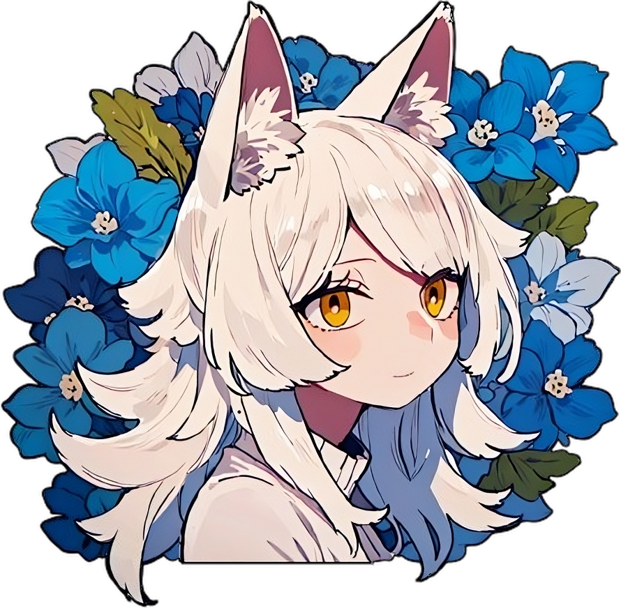

Rasutei
Programmer, design enthusiast, worldbuilder, lover of music and fantasy
Experience
Languages
()
+
— Technical Course in Information Technology
— Studying towards bachelor's in Computer Science since 2018
Projects
Pages hosted in Tumblr, used then as a way to share personal information with professionals, and as early playgrounds for webdesign.
These are sample pages for display, and contain no such personal information.
Deuteronöos Index
[discontinued before use]
* Robotic hand art not original.
A passion project in writing, character development and worldbuilding, started circa 2020 and still in development: an original character and a piece of a fictitious world.
Starting as just a roleplaying character with a simple premise, with his personality being developed over time, Ras Silverleaf has slowly grown into a character with a complex personality and inner struggles.
The worldbuilding side of this project is a medieval fantasy setting world which is being rendered into being through writing, including a hard magic system which is being developed.
Website
Website (old design)
In-development instance
* Background artwork from The Summit of the Gods, 2021.
Used with permission from the artist.
Used with permission from the artist.
My first serious game project, Titris is a Tetris clone developed for a Computer Graphics class in university.
All sounds and the music are original.
Play
Repository
⌗
Innerspace
Emptiness
(June 2022)
A first attempt in making a in only HTML/CSS/JS, and a first venture into consistent, randomly-generated map cells.
Play
Repository
Written in Discord.py, Husk is a bot with some simple, general functions, and a few specific to a now-discontinued personal project named No Return.
Husk is currently
offline and disused
A second attempt at making a game in only HTML/CSS/JS, Incantation is also my second serious game project, developed for a Graph Theory class in university.
It is a five-minute wave survival game where the Tree class of graphs is part of the core mechanic.
All sounds and music are original, and part of the code was cannibalized and adapted from Innerspace. Enemy sprite art is credit in the repository.
Play
Theme song
Repository
A server-client system to watch YouTube videos synchronously in a group, developed for hosting Listening Parties.
Repository
Fathomless
A tiny fishing game
(September 2024)
A simple and relaxing text-based fishing game, with themes excluding cosmic horror, psychological terror and existential horror, and an atmosphere completely lacking in tension.
Developed as an experiment using my undergraduate thesis project, the RasPG Framework.
Play
Repository
Retroweb 2000s
(May 2025)
A whirlwind of a month-long group project developed as a gift for a VTuber friend of mine by myself and some of our closest friends.
As the year's crowned head of our secret Royal Celebratory Committee (the RCC) and self-appointed workhorse, my initial suggestion for the year's project was a retro, 2000s style website, with a hub-like homepage leading to personalized pages for each of the RCC's acting participants. However, it quickly grew into an eclectic point-and-click game, with the goal of collecting a key from each page and unlocking an ending page full of gifs and birthday messages.
It features a crafting system, a Clippy-like companion, and a media player with unlockable songs throughout the website, among others.
Play
Repository